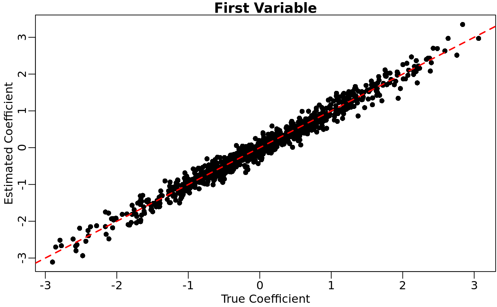
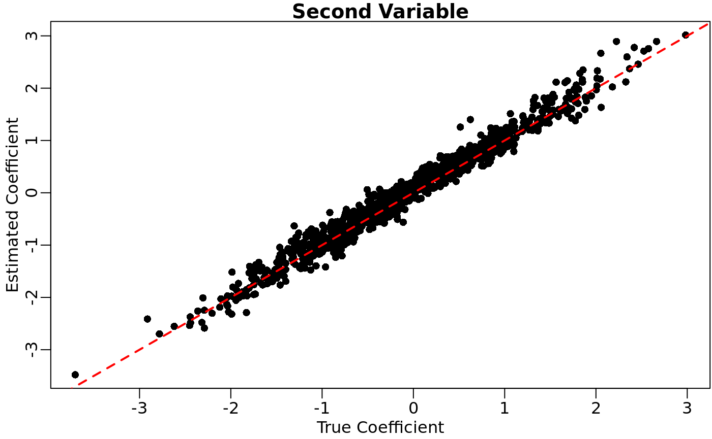
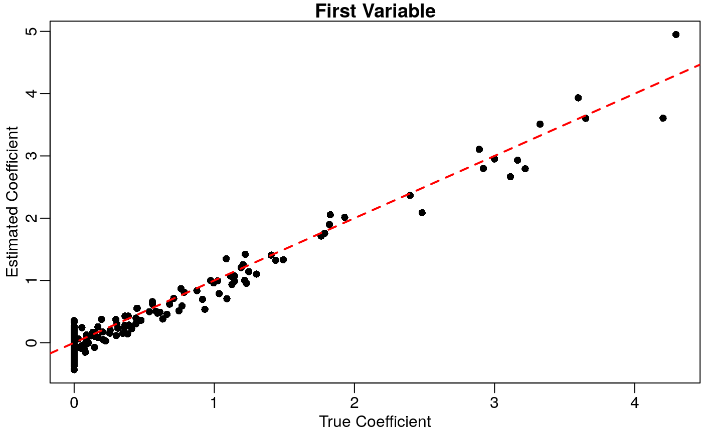

vignettes/different_thinners.Rmd
different_thinners.RmdWe demonstrate how to apply the different thinning functions available in seqgendiff. The following contains guidelines for the workflow of a single repetition in a simulation study.
The methods used here are described in Gerard (2020).
We will use simulated data for this vignette. Though in practice you would obtain the RNA-seq counts from a real dataset.
Each repetition of a simulation study, you should randomly subset your RNA-seq data so that your results are not dependent on the quirks of a few individuals/genes. The function to do this is select_counts().
submat <- select_counts(mat = mat, nsamp = 6, ngene = 1000)
The default is to randomly select the samples and genes. Though there are many options available on how to select the genes using the gselect argument.
If the row and column names of the original matrix are NULL, then the row and column names of the returned submatrix contain the indices of the selected rows and columns of the original matrix.
If you are exploring the effects of heterogeneous library sizes, use thin_lib(). You specify the thinning factor on the log-2 scale, so a value of 0 means no thinning, a value of 1 means thin by half, a value of 2 means thin by 1/4, etc. You need to specify this scaling factor for all samples.
scaling_factor <- seq_len(ncol(submat)) scaling_factor #> [1] 1 2 3 4 5 6 thout <- thin_lib(mat = submat, thinlog2 = scaling_factor)
We can verify that thinning was performed correctly by looking at the empirical thinning amount.
## Empirical thinning colSums(thout$mat) / colSums(submat) #> 18 44 62 69 92 99 #> 0.49887721 0.24906136 0.12624313 0.06288817 0.03108922 0.01598802 ## Specified thinning 2 ^ -scaling_factor #> [1] 0.500000 0.250000 0.125000 0.062500 0.031250 0.015625
A similar function exists to thin gene-wise rather than sample-wise: thin_gene().
To uniformly thin all counts, use thin_all(). This might be useful for determining read-depth suggestions. It takes as input a single universal scaling factor on the log-2 scale.
thout <- thin_all(mat = submat, thinlog2 = 1)
We can verify that we approximately halved all counts:
Use thin_diff() for general thinning. For this function, you need to specify both the coefficient matrix and the design matrix.
designmat <- cbind(rep(c(0, 1), each = ncol(submat) / 2), rep(c(0, 1), length.out = ncol(submat))) designmat #> [,1] [,2] #> [1,] 0 0 #> [2,] 0 1 #> [3,] 0 0 #> [4,] 1 1 #> [5,] 1 0 #> [6,] 1 1 coefmat <- matrix(stats::rnorm(ncol(designmat) * nrow(submat)), ncol = ncol(designmat), nrow = nrow(submat)) head(coefmat) #> [,1] [,2] #> [1,] 0.2554242 -1.3119342 #> [2,] 0.6377614 0.5336341 #> [3,] 1.3052848 0.6763963 #> [4,] 0.1383671 -0.9041101 #> [5,] -0.1251100 1.3601036 #> [6,] -0.8867430 -0.5249070
Once we have the coefficient and design matrices, we can thin.
thout <- thin_diff(mat = submat, design_fixed = designmat, coef_fixed = coefmat)
We can verify that we thinned correctly using the voom-limma pipeline.
new_design <- cbind(thout$design_obs, thout$designmat) vout <- limma::voom(counts = thout$mat, design = new_design) lout <- limma::lmFit(vout) coefhat <- coef(lout)[, -1, drop = FALSE]
We’ll plot the true coefficients against their estimates.
oldpar <- par(mar = c(2.5, 2.5, 1, 0) + 0.1, mgp = c(1.5, 0.5, 0)) plot(x = coefmat[, 1], y = coefhat[, 1], xlab = "True Coefficient", ylab = "Estimated Coefficient", main = "First Variable", pch = 16) abline(a = 0, b = 1, lty = 2, col = 2, lwd = 2)

plot(x = coefmat[, 2], y = coefhat[, 2], xlab = "True Coefficient", ylab = "Estimated Coefficient", main = "Second Variable", pch = 16) abline(a = 0, b = 1, lty = 2, col = 2, lwd = 2)

par(oldpar)
The difference between the design_fixed and design_perm arguments is that the rows in design_perm are permuted before applying thinning. Without any other arguments, this makes the design variables independent of any surrogate variables. With the additional specification of the target_cor argument, we try to control the amount of correlation between the design variables in design_perm and any surrogate variables.
Let’s target for a correlation of 0.9 between the first surrogate variable and the first design variable, and a correlation of 0 between the first surrogate variable and the second design variable.
target_cor <- matrix(c(0.9, 0), nrow = 2) target_cor #> [,1] #> [1,] 0.9 #> [2,] 0.0 thout_cor <- thin_diff(mat = submat, design_perm = designmat, coef_perm = coefmat, target_cor = target_cor) #> Note that optmatch uses a strange non-standard license: #> https://cran.r-project.org/package=optmatch/LICENSE #> #> If this doesn't work for you, try permute_method = "hungarian" #> #> This message is displayed once per R session.
The first variable is indeed more strongly correlated with the estimated surrogate variable:
cor(thout_cor$designmat, thout_cor$sv) #> [,1] #> P1 0.7473094 #> P2 0.2976213
The actual correlation between the permuted design matrix and the surrogate variables will not be the target correlation. But we can estimate what the actual correlation is using the function effective_cor().
eout <- effective_cor(design_perm = designmat, sv = thout_cor$sv, target_cor = target_cor, iternum = 50) eout #> [,1] #> [1,] 0.7113003 #> [2,] 0.1399246
I am only using 50 iterations here for speed reasons, but you should stick to the defaults for iternum.
For the special case when your design matrix is just a group indicator (that is, you have two groups of individuals), you can use the function thin_2group(). Let’s generate data from the two-group model where 90% of genes are null and the non-null effects are gamma-distributed.
thout <- thin_2group(mat = submat, prop_null = 0.9, signal_fun = stats::rgamma, signal_params = list(shape = 1, rate = 1))
We can again verify that we thinned appropriately using the voom-limma pipeline:
new_design <- cbind(thout$design_obs, thout$designmat) new_design #> (Intercept) P1 #> [1,] 1 0 #> [2,] 1 0 #> [3,] 1 0 #> [4,] 1 1 #> [5,] 1 1 #> [6,] 1 1 vout <- limma::voom(counts = thout$mat, design = new_design) lout <- limma::lmFit(vout) coefhat <- coef(lout)[, 2, drop = FALSE]
And we can plot the results
oldpar <- par(mar = c(2.5, 2.5, 1, 0) + 0.1, mgp = c(1.5, 0.5, 0)) plot(x = thout$coefmat, y = coefhat, xlab = "True Coefficient", ylab = "Estimated Coefficient", main = "First Variable", pch = 16) abline(a = 0, b = 1, lty = 2, col = 2, lwd = 2)
